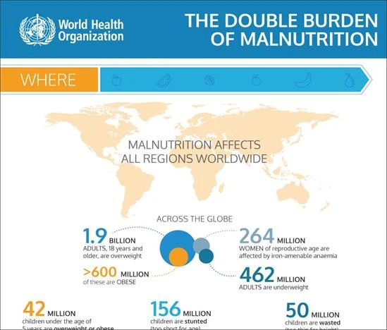

December 2024

WHO Declares Malnutrition Crisis Amid Rising Global Obesity Rates
The World Health Organization reports that malnutrition in all its forms remains one of the world's most serious health challenges, affecting nearly every country globally with the dual burden becoming increasingly prevalent.